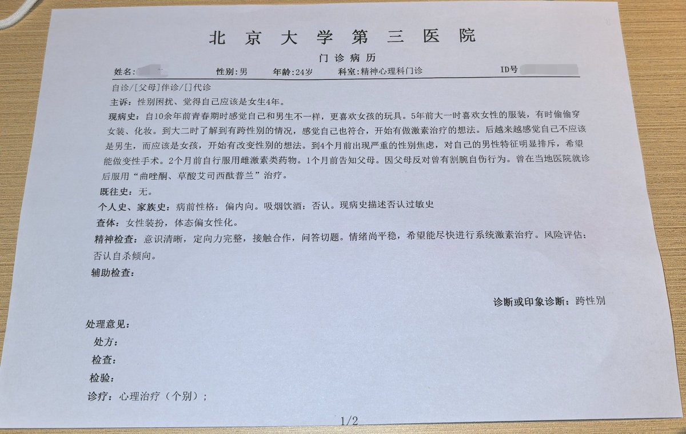

STRIDSFORDON 9040C “Ljusdimma” 🏳️⚧️
@Strf_9040C
@supersuger8 缺失法定的医师签名及医院公章，无法证明内容的真实性与法律归属性
缺乏主体责任背书的医疗文书不具证据效力
无法作为手术证明、户籍更改或司法鉴定的依据，本质上属于未经认证的院内草稿或非正式记录

supersuger🏳️⚧️
@supersuger8
姐妹们这个算是小证吗，我在北医三院找的郝树伟医生，他开的病历上只写了个“跨性别”，医院也不给病历盖章... https://t.co/0YRn7dwRUH